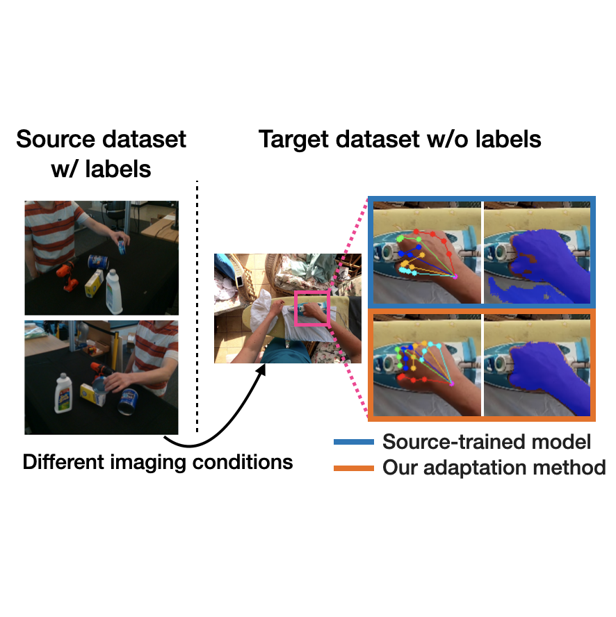
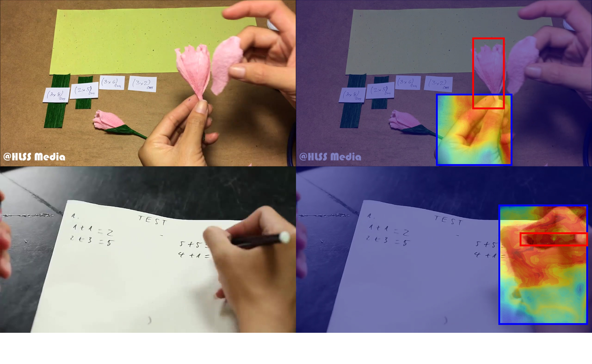
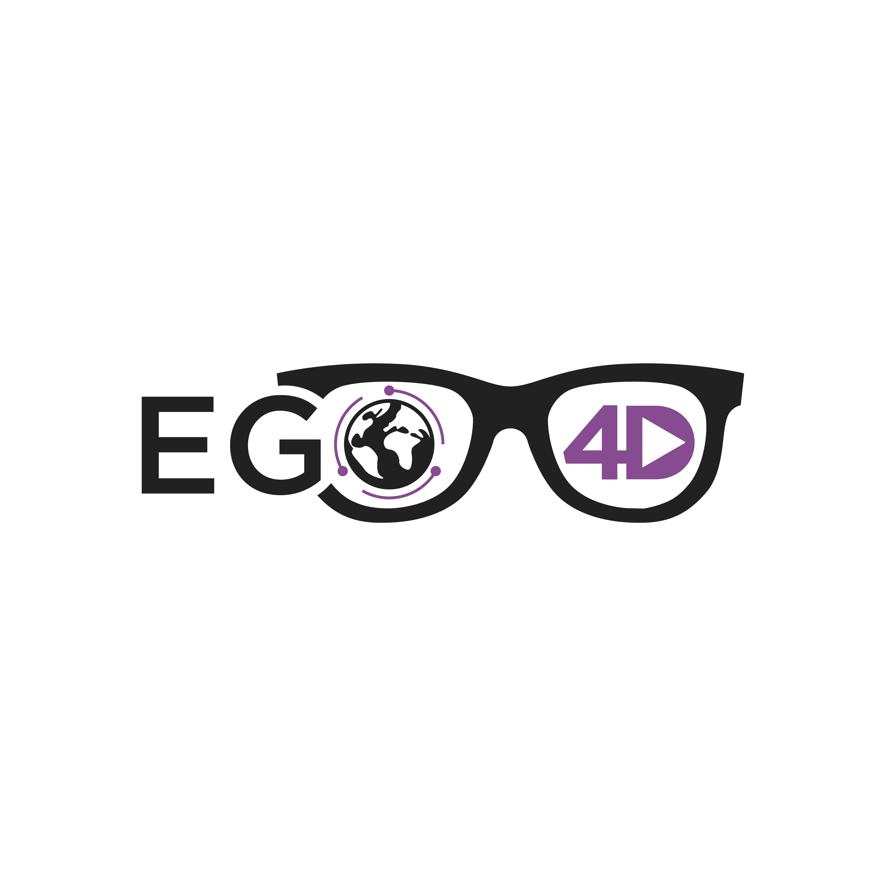
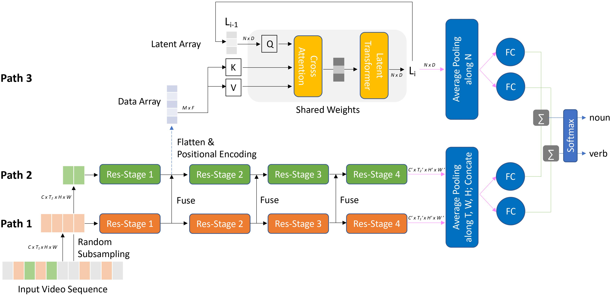
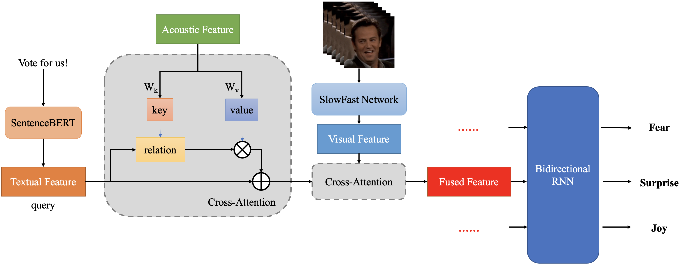
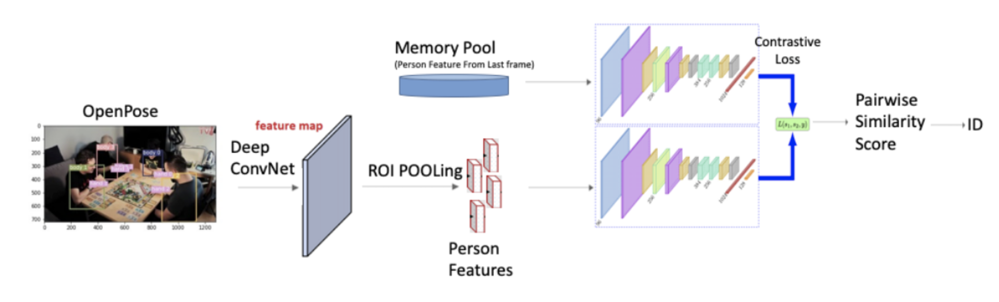
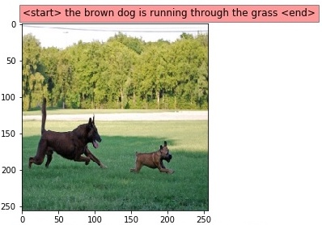

Qichen FuI am an M.S in Robotics (MSR) student at the Robotics Institute of Carnegie Mellon University, working with Prof. Kris Kitani on computer vision research. In 2020, I obtained my dual Bachelor's degree: B.S in Computer Science at University of Michigan - Ann Arbor, and B.S in Electrical & Computer Engineering at Shanghai Jiao Tong University. At UM, I was advised by Prof. David Fouhey working on object articulation detection, cloud geographical location prediction, and 3D hand pose forecasting. I was also advised by Prof. Jeffrey A. Fessler on medical image reconstruction with deep learning. Email: qichenf@andrew.cmu.edu Google Scholar / CV / Github / LinkedIn |

|
Research InterestsMy research interests are computer vision, computer graphics, and machine learning. Recently, I am interested in understanding human activity, reconstructing 3D objects/scenes, and learning to interact with the world. I am also particularly interested in self-supervised and unsupervised learning which exploit prior knowledge such as temporal information, geometry, multimodal consistency, and physical constraints. |
Publications |
|  |
Domain Adaptive Hand Keypoint and Pixel Localization in the WildTakehiko Ohkawa, Yu-Jhe Li, Qichen Fu, Ryosuke Furuta, Kris M. Kitani, Yoichi Sato ECCV 2022 [PDF][Project] |
|  |
Sequential Voting with Relational Box Fields for Active Object DetectionQichen Fu, Xingyu Liu, Kris M. Kitani CVPR 2022 [PDF][Project][Code] |
|  |
Ego4D: Around the World in 3,000 Hours of Egocentric VideoKristen Grauman, Andrew Westbury, Eugene Byrne*, Zachary Chavis*, Antonino Furnari*, Rohit Girdhar*, Jackson Hamburger*, Hao Jiang*, Miao Liu*, Xingyu Liu*, Miguel Martin*, Tushar Nagarajan*, Ilija Radosavovic*, Santhosh Kumar Ramakrishnan*, Fiona Ryan*, Jayant Sharma*, Michael Wray*, Mengmeng Xu*, Eric Zhongcong Xu*, Chen Zhao*, Siddhant Bansal, Dhruv Batra, Vincent Cartillier, Sean Crane, Tien Do, Morrie Doulaty, Akshay Erapalli, Christoph Feichtenhofer, Adriano Fragomeni, Qichen Fu, Christian Fuegen, Abrham Gebreselasie, Cristina Gonzalez, James Hillis, Xuhua Huang, Yifei Huang, Wenqi Jia, Weslie Khoo, Jachym Kolar, Satwik Kottur, Anurag Kumar, Federico Landini, Chao Li, Yanghao Li, Zhenqiang Li, Karttikeya Mangalam, Raghava Modhugu, Jonathan Munro, Tullie Murrell, Takumi Nishiyasu, Will Price, Paola Ruiz Puentes, Merey Ramazanova, Leda Sari, Kiran Somasundaram, Audrey Southerland, Yusuke Sugano, Ruijie Tao, Minh Vo, Yuchen Wang, Xindi Wu, Takuma Yagi, Yunyi Zhu, Pablo Arbelaez†, David Crandall†, Dima Damen†, Giovanni Maria Farinella†, Bernard Ghanem†, Vamsi Krishna Ithapu†, C. V. Jawahar†, Hanbyul Joo†, Kris Kitani†, Haizhou Li†, Richard Newcombe†, Aude Oliva†, Hyun Soo Park†, James M. Rehg†, Yoichi Sato†, Jianbo Shi†, Mike Zheng Shou†, Antonio Torralba†, Lorenzo Torresani†, Mingfei Yan†, Jitendra Malik CVPR 2022 (Oral) [PDF][Project] |
|  |
EgoAugment for Action RecognitionXuhua Huang, Ye Yuan, Xingyu Liu, Qichen Fu, Kris M. Kitani CVPR 2021 Workshop [PDF] |
Projects |
|  |
Multimodal Emotion Recognition in ConversationLiyun Tu*, Qichen Fu*, Shengli Zhu*, Xi Chen*, Xiaoyu Sun* Multimodal Machine Learning Final Project; Carnegie Mellon University; Fall 2021 [Poster] ‣ Proposed a framework integrating the Bidirectional LSTM and Cross Attention Module to fuse textual, acoustic, and visual features for Emotion Recognition in Conversations. |
|  |
Online Multi-hands Tracking via Discrimination and Memory CacheQichen Fu*, Jiaqi Geng*, Sirou Zhu* Visual Learning and Recognition Final Project; Carnegie Mellon University; Spring 2021 [Project][Code][Data] ‣ Implemented a Hand Tracking Baseline using Hungarian Algorithm and Kuhn-Munkres Algorithm. |
|  |
Recurrent Neural Network for Image CaptionQichen Fu*, Yige Liu*, Zijian Xie* Computer Vision Final Project; University of Michigan - Ann Arbor; Winter 2019 [PDF][Code] ‣ Implemented an Image Caption Generator "Show and Tell: A Neural Image Caption Generator" in PyTorch, which is composed of a deep CNN, LSTM, and a trainable soft-attention module. |
Teaching |
Service |
|
|